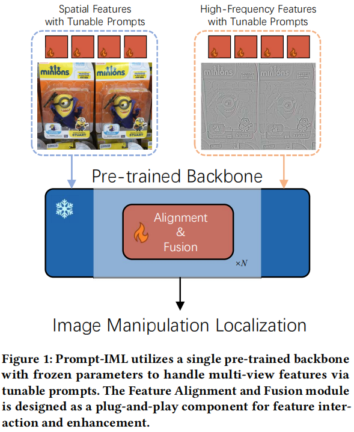
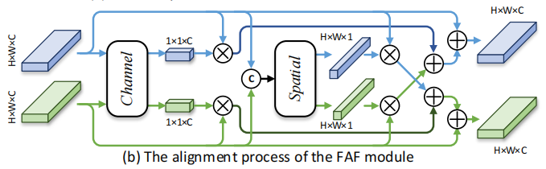

Multi-view Feature Extraction via Tunable Prompts is Enough for Image Manipulation Localization
Multi-view Feature Extraction via Tunable Prompts is Enough for Image Manipulation Localization
\(\text{Xuntao Liu},\text{Yuzhou
Yang},\text{Haoyue Wang},\text{Qichao Ying},\text{Zhenxing
Qian}^*,\text{Xinpeng Zhang},\text{Sheng
Li},\)
复旦大学计算机科学学院，NVIDIA上海
摘要
虚假图像可以通过社交网络服务迅速传播，构成重大风险。图像篡改定位（IML）的快速发展试图解决这个问题。然而，IML任务中公共训练数据集的稀缺直接阻碍了模型的性能。
为了应对这一挑战，我们提出了一个Prompt-IML框架，该框架通过采用可调提示来利用预训练模型的丰富先验知识。
具体来说，一组可调提示使冻结的预训练模型能够提取多视图特征，包括空间和高频特征。这种方法最大限度地减少了跨不同视图进行特征提取的冗余架构，从而降低了培训成本。
此外，我们开发了一个即插即用的特征对齐和融合模块，该模块无缝集成到预训练的模型中，无需进行额外的结构修改。所提出的模块通过交互式处理降低了特征中的噪声和不确定性。
实验结果表明，我们提出的方法在6个测试数据集上取得了优异的性能，表现出卓越的鲁棒性。
1. 引言
我们观察到，分类、目标检测和语义分割等任务具有许多具有丰富的先验知识的预训练模型，如双变压器[20]。考虑利用这些预先训练过的模型来处理IML任务中的挑战是很自然的。然而，直接将它们应用到IML任务中被证明是低效的[22]。这种低效源于IML任务的独特性质，该任务侧重于从图像中提取非语义的视觉线索和低层次的不连续性。有两个关键方面说明了这种特殊性：
1)高频信息：由不同的摄像机捕获的图像显示出不同的噪声模式[16]。这给伪造的图像带来不一致的噪声，而真实的区域来自不同的图像。此外，由不同网络生成的图像可能在频域[27]上存在差异。
2)边缘信息：图像编辑的级别可能会发生变化，导致在锻造区域的边界上的锯齿状和不光滑的边缘或颜色不一致的[37]。这些细节对于精确的操作定位化至关重要，但在许多任务中经常被忽略。
IML-ViT [22]是在IML任务中使用基于普通ViT[6]体系结构的预训练模型的开创性尝试。它们还结合了边缘监督，将网络的注意力引向微妙的篡改伪影。然而，IML-ViT忽略了在以前的许多工作[4,14,15]中已经验证过的有效的高频信息。在IML任务中，处理多视图特征通常需要并行的主干架构[4,14]，这在参数增加的紧急情况下变得具有挑战性。此外，IML-ViT尽管利用了预先训练过的模型，但仍需要从头开始使用数据集来训练模型。这无疑对计算资源产生了巨大的需求，特别是在调优大型预训练模型方面。此外，之前的一些工作表明，在下游任务上调整大型预训练模型可能会损害模型[30]的性能，这在我们的比较实验中也可以观察到。
在本文中，我们提出了Prompt-IML，如图1所示，旨在通过利用预训练模型的丰富的先验知识来解决IML任务中数据集的稀缺问题。

图1： Prompt-IML利用一个具有冻结参数的单一预训练主干，通过可调谐提示来处理多视图特性。特性对齐和融合模块被设计为特性交互和增强的即插即用组件。
具体来说，Prompt-IML遵循一个编码器-解码器架构。基于预训练模型的编码器负责特征提取，然后解码器对这些特征进行处理，以准确定位被操纵的区域。为了在不诉诸于复杂的并行架构的情况下处理有利于IML任务的多视图特性，我们建议使用可调提示集来利用预先训练好的模型作为编码器。在训练这些提示时，我们冻结了预先训练好的模型。它有三个主要的优势。首先，它允许预先训练好的模型用于处理每个视图中的特征。其次，处理后的特征保留了来自预训练模型的鲁棒性。最后，它有助于减少训练所需的计算资源。
此外，考虑到多视图特征之间的变化，我们提出了一个特征对齐和融合（FAF）模块。该模块被设计为即插即用组件，可以无缝集成到编码器，而不需要额外的结构修改。在FAF模块中，针对不同的优点采用了多种注意机制。FAF模块减少了特征中的噪声和不确定性，同时也抑制了零星的正响应，以确保输出一致。
为了公平地评估模型的能力，我们遵循了IML-ViT中概述的评估方案。它只涉及使用CASIA2数据集进行训练，然后对其他6个数据集进行测试。重要的是，我们确保了训练数据集和测试数据集之间的零数据重叠，使其成为一个跨数据集的评估。实验结果表明，所提出的Prompt-IML有效地利用了预训练模型中的先验知识，优于以往的先进方法，并表现出更强的鲁棒性。我们的贡献可以概括为三个方面：
我们的贡献可以总结为三个方面：
- 我们引入了Prompt-IML来应对IML数据集的稀缺所带来的挑战。我们的方法通过集成可调提示，从单个预先训练过的主干中提取和调整多视图特征，从而保持性能和鲁棒性。
- 我们精心设计了一个即插即用的特性对齐和融合（FAF）模块，它可以无缝地集成到主干网中。它有效地减少了特征中的噪声和不确定性，同时减轻了零星的积极响应的影响。
- Prompt-IML在6个测试数据集上都优于最先进的方法。我们的广泛的实验证实了我们的方法的普遍性和鲁棒性，也验证了所提出的FAF模块的有效性。
2. 方法
2.1 方法概述
图2展示了所提出的Prompt-IML的管道设计，它遵循了通用的编码器-解码器框架。完整的传递途径包括特征提取和操作定位两个阶段。
在特征提取阶段，我们采用预训练好的双子变压器作为骨干，并在训练过程中保持其参数冻结。同时，我们利用多组可调提示来分别调整图像的空间特征和高频特征。因此，这种方法避免了使用冗余的模型体系结构来从其他视图中提取特征。考虑到多视图特征的差异，我们提出了一个特征对齐和融合（FAF）模块进行处理。FAF模块集成在主干层之间，有效地降低了每层提取特征内的噪声和不确定性。同时，它们有助于抑制零星的积极反应，导致更一致的输出。这些模块都是即插即用的，不需要对主干本身进行任何修改。在操作定位阶段，我们使用掩模2前作为解码器，其中包括一个像素解码器和一个变压器解码器。解码器处理从前一阶段获得的多尺度特征，并产生最终的预测。
2.2 特征提取阶段
我们将输入图像表示为 $~ \mathbf{X}\in\mathbb{R}^{\boldsymbol{h}\times\boldsymbol{w}\times3} $ 。为了获取空间特征的输入，我们将图像划分为指定大小的斑块：
\[\mathrm{F}_{0}^{RGB}=\mathrm{Norm}(\mathrm{Conv}(\mathrm{X}))+\mathrm{F}_{PE},\] 其中 $~ \mathbf{F}_0^{RGB}\in\mathbb{R}^{H\times W\times C} $ ，Conv表示分区操作， $~ \mathrm{F}_{PE} $ 是一个可学习的位置嵌入。接下来，我们使用一组具有不同大小的内核的BayarConv来提取高频特征： \[\mathbf{F}_{0}^{HFQ}=\mathrm{Concat}(\{\mathrm{BayarConv}_{\mathrm{i\times i}}(\mathbf{X})\}), i\in\{3,5,7\},\] 其中 $~ \mathbf{F}_0^{HFQ}\in\mathbb{R}^{H\times W\times C} $ ，i表示内核大小。所获得的特征将被发送到骨干网中以进行进一步的处理。
2.2.1 具有可调调提示的多视角特征处理
我们采用预先训练的语义分割（SS, semantic segmentation）任务中常用的Swin-Transformer作为主干，原因如下：
1)Swin-Transformer包括一个与图像大小相比具有线性时间复杂度的窗口注意设计；
2)补丁合并操作可以生成多尺度特征图，这在IML任务[4,11]中被证明是重要的。
3) SS任务和IML任务有一些相似之处，因为它们本质上是像素级的分类任务。
我们认为，用于SS任务的预训练模型，经过微调后，更有利于实现精确的像素级操作定位。
Swin-Transformer包括4层，并具有特定分辨率的输出特征。我们将第i层的输出特征表示为
$ F_i $ ： \[\mathbf{F}_{i}=\mathrm{Layer}_{\mathrm{i}}\left(\mathbf{F}_{i-1}\right)\in\mathbb{R}^{(H_{i}\times
W_{i})\times C_{i}},i\in\{1,2,3,4\},\]
其中， $~
H_{i}=\frac{H}{2^{i-1}},W_{i}=\frac{W}{2^{i-1}},C_{i}=C*2^{i-1} $ ， $
{Layer}_i $ 象征着
Swin-Transformer的第i层。
我们采用了一种提示调优方法[12]，使一个单一的预训练模型能够同时处理空间和高频特征。具体来说，在训练过程中，我们在每一层利用两组提示分别处理空间特征和高频特征，同时冻结主干的参数。我们将第i层的输入特征表示为
$~ F^{RGB}_{i-1} $ 和 $~ F^{HFQ}_{i-1} $ 。它们先重塑为 $~
\mathbb{R}^{(H_{i-1}\times W_{i-1})\times C_{i-1}} $ ，然后分别加入提示
$~ P^{RGB}_{i-1} $ 和 $~ P^{HFQ}_{i-1}\in\mathbb{R}^{n_{p}\times
C_{i-1}} $ 。因此，公式3的每一层过程已被变更为： \[\mathbf{F}_{i}^{RGB}=\mathrm{Layer}_{i}\left(\left[\mathbf{P}_{i-1}^{RGB},\mathbf{F}_{i-1}^{RGB}\right]\right),\\\mathbf{F}_{i}^{HFQ}=\mathrm{Layer}_{i}\left(\left[\mathbf{P}_{i-1}^{HFQ},\mathbf{F}_{i-1}^{HFQ}\right]\right),\]
其中，[·]表示Concat操作。
2.2.2 特征对齐和融合模块
针对骨干处理的空间和高频特征，我们提出了一个特征对齐和融合的FAF模块。FAF模块集成在主干网的一些相邻层之间，如图2所示。FAF模块由对齐阶段[36]和融合阶段组成，详细的组成和过程如图3所示。
图3：所提出的特性对齐和融合（FAF）模块的设计和可调提示的使用。通道，空间，可变形分别表示等式5，等式6和等式 9的过程。
特征对齐阶段
在特征对齐阶段，我们同时利用通道注意和空间注意来研究特征的通道间和空间间的相关性，从而利用相应的信息增强特征。未经处理的特征从增强的特征中收集信息，减少了潜在的不确定性和噪声。

具体来说，我们首先使用平均池化操作（用上划线表示）来聚合信息。然后，将它们连接到 $ C_i $ 的维数上，即[·]表示，并输入到MLP层以生成信道注意向量 $~ \mathbf{W}_{i}^{C_{RGB}} $ ， $~ \mathbf{W}_{i}^{C_{HFQ}}\in\mathbb{R}^{1\times1\times C_{i}} $ 。上述过程公式化如下： \[\begin{aligned}\mathbf{W}_{i}^{C_{RGB}},\mathbf{W}_{i}^{C_{HFQ}}&=\mathrm{ChannelAttn}\left(\mathbf{F}_{i}^{RGB},\mathbf{F}_{i}^{HFQ}\right) \\&=\mathrm{Split}(\mathrm{MLP}([\overline{\mathbf{F}_{i}^{RGB}},\overline{\mathbf{F}_{i}^{HFQ}}])),\end{aligned}\]
其中，Split是Concat的反向操作。为了获得空间注意向量，我们利用两个1×1卷积与一个中间的ReLU层，用
$ g() $ 表示，来聚合空间信息。获取空间注意向量 $~
\mathbf{W}_{i}^{S_{RGB}} $ ， $~
\mathbf{W}_{i}^{S_{HFQ}}\in\mathbb{R}^{H_i\times W_i\times1} $
的过程公式化如下： \[\begin{aligned}\mathbf{W}_{i}^{S_{RGB}},\mathbf{W}_{i}^{S_{HFQ}}&
=\mathrm{SpatialAttn}\left(\mathbf{F}_{i}^{RGB},\mathbf{F}_{i}^{HFQ}\right)
\\&=\mathrm{Split}\left(\mathrm{Conv}\left(g\left(\mathrm{Conv}\left(\left[\mathrm{F}_{i}^{RGB},\mathrm{F}_{i}^{HFQ}\right]\right)\right)\right)\right).\end{aligned}\]
最后，我们通过应用交叉注意向量对来自不同分支的特征进行对齐，通过元素级添加为下一个主干层产生输入：
\[\begin{aligned}&\mathbf{F}_{i}^{C_{RGB}}=\mathbf{W}_{i}^{C_{RGB}}\odot\mathbf{F}_{i}^{RGB},\quad\mathbf{F}_{i}^{S_{RGB}}=\mathbf{W}_{i}^{S_{RGB}}\odot\mathbf{F}_{i}^{RGB},
\\&\mathbf{F}_{i}^{C_{HFQ}}=\mathbf{W}_{i}^{C_{HFQ}}\odot\mathbf{F}_{i}^{HFQ},\quad\mathbf{F}_{i}^{S_{HFQ}}=\mathbf{W}_{i}^{S_{HFQ}}\odot\mathbf{F}_{i}^{HFQ},
\\&\mathbf{F}_{i}^{RGB}:=\mathbf{F}_{i}^{RGB}+\mathbf{F}_{i}^{C_{HFQ}}+\mathbf{F}_{i}^{S_{HFQ}},
\\&\mathbf{F}_{i}^{HFQ}:=\mathbf{F}_{i}^{HFQ}+\mathbf{F}_{i}^{C_{RGB}}+\mathbf{F}_{i}^{S_{RGB}}.\end{aligned}\]
特征融合阶段
在特征融合阶段，我们首先利用不同膨胀率的扩张卷积DConv来处理特征图，增强斑块内的相互作用。
具体来说，我们使用膨胀速率k∈{1,3,5}进行处理，然后在维度of $ C_i $ 上连接输出。对这些连接起来的特征进行处理，以整合信息和未经处理的特征： \[\tilde{\mathrm{F}}_{i}=\mathrm{Conv}\left(\left[\mathrm{Conv}\left(\left[\mathrm{DConv}_{\mathrm{k\times k}}\left(\mathbf{F}_{i}\right)\right]\right),\mathbf{F}_{i}\right]\right),k\in\{1,3,5\}.\]
然后，我们应用可变形注意力机制来促进多视图块间的信息交互。可变形注意机制不仅通过可学习偏移量采样降低了计算复杂度，还有助于抑制特征图中的零星积极反应，这有助于定位，因为篡改操作通常影响像素的特定区域，而不是孤立的特定区域[4]。从上一步的 $ ~\mathbf{\tilde{F}}_{i}^{RGB} $ 和 $~ \mathbf{\tilde{F}}_{i}^{HFQ} $ 处理得到特征：
\[\mathbf{attn}^{RGB}=\mathrm{DeformAttn}_{1}\left(\mathrm{Q}=\tilde{\mathbf{F}}_{i}^{RGB},\mathrm{K\&V}=\tilde{\mathbf{F}}_{i}^{HFQ}\right),\\\mathbf{attn}^{HFQ}=\mathrm{DeformAttn}_{2}\left(\mathrm{Q}=\tilde{\mathbf{F}}_{i}^{HFQ},\mathrm{K\&V}=\tilde{\mathbf{F}}_{i}^{RGB}\right),\\\mathbf{F}_{i}^{d}=\gamma_{1}\cdot\left(\tilde{\mathbf{F}}_{i}^{RGB}+\mathbf{attn}^{RGB}\right)+\gamma_{2}\cdot\left(\tilde{\mathbf{F}}_{i}^{HFQ}+\mathbf{attn}^{HFQ}\right),\]
其中， ${1} $ ， ${2} $ 是可学习的参数。输出的 $~ F^d_i $ 用于解码器。
2.3 篡改定位阶段
为了细化上一阶段获得的多尺度特征，我们使用Mask2Former[3]作为解码器，它包括两个关键组件：像素解码器和Transformer解码器。
像素解码器负责逐步向上采样特征从低分辨率到高分辨率。Transformer解码器利用查询嵌入和多尺度特性进行定位。这种方法有几个优点。首先，利用多尺度特征有利于定位小的篡改区域。此外，掩膜注意力的查询嵌入的整合有助于限制交叉注意对被篡改区域的单独关注，从而增强了与篡改相关的特征提取。
2.4 损失函数
考虑到被篡改区域的边界可能表现出锯齿状、非平滑的边缘和颜色不一致，我们从IML-ViT[22]中汲取灵感，并引入了边缘监督。具体来说，我们使用形态学操作，如侵蚀和膨胀操作，来处理掩模M并生成相应的边缘掩模 $ M^★ $ 。与利用网络生成边缘预测[4]的方法相比，该策略不仅包含了边缘信息，同时还消除了调整骨干的需要，增强了其灵活性。损失函数包括两个分量，每个分量对应于对预测结果和预测边缘的监督： \[\mathcal{L}=\mathcal{L}_{seg}(M_{gt},M_{pred})+\lambda\mathcal{L}_{edge}(M_{gt}^{\star},M_{pred}^{\star})\]
3 实验
3.1 实验设置
数据集
我们采用了一个关于IML任务的通用训练协议[2,22,37]，以促进模型性能的公平比较，并避免了私有合成数据集的影响。我们仅使用CASIA2
[5]来训练Prompt-IML。6个公共测试数据集用于评估，包括CASIA1 [5]、NIST16
[7]、COVERAGE[32]、Columbia[25]、IMD2020
[26]和DEFACTO[23]。在MVSS-Net[2]之后，我们对来DEFACTO的抽样子数据集进行了测试，其中包含6000张真实图像和6000张经过处理的图像。评估构成了跨数据集分析，因为我们的训练集和测试数据集之间没有重叠。
评估标准
我们使用像素级的F1分数来评估我们的模型在测试数据集上的性能。以往的一些方法采用了以最优阈值优化F1分数的策略，为每幅图像选择不同的阈值。然而，最优阈值的决定需要地面真实数据，这在现实场景中是不可行的。因此，我们以固定的阈值报告f1分数，它独立于模型本身，并提供了一个公平的模型性能评估。
实施细节
我们在RTX 3090GPU上训练我们的模型
Prompt-IML
80轮次，每个GPU的批处理大小为2。编码器和解码器都在COCO[17]上使用预先训练的权值进行初始化。除非另有说明，所有图像的大小都会被调整为1024×1024。在IML-ViT[22]之后，我们使用了简单和公共的数据增强技术，包括翻转、模糊、旋转、JPEG压缩、随机复制移动和在单个图像中矩形区域进行图像修复。我们使用基本学习速率为1×10−4的AdamW[21]优化器，并利用余弦衰减策略来调度学习速率。
3.2 性能比较
我们将我们的方法与其他8种最先进的方法进行了比较，以全面评估我们的方法，并在表1中报告了F1评分。
我们可以观察到，我们的方法对每个改进的数据集的最佳基线分别为2.8%、4.6%、7.6%、8.1%和4.9%。与次优基线IML-ViT [22]相比，它平均提高了4.3%。这些都充分证明了我们的模型的优越性。然而，在COVER[32]数据集上，基于MVSS-net的方法[2,4]的性能优于所有其他方法。COVER是一个仅通过复制-移动技术创建的小型伪造图像数据集，大多数检测线索位于伪造区域的边界周围。因此，我们将这种现象归因于他们精心设计的边缘信息提取结构和数据增强技术。
此外，图4显示了每个模型的预测定位结果，每个图像来自一个不同的数据集，在操纵区域有很大的变化。
研究结果强调了该方法具有显著的泛化能力，表明该方法可以有效地利用嵌入在预训练模型中的先验知识来检测篡改痕迹。
3.3 鲁棒性
在本节中，我们利用6个测试数据集来全面评估Prompt-IML的鲁棒性。在IML-ViT[22]之后，我们应用两种常见的攻击方法，即JPEG压缩和高斯模糊，在不同的扰动级别上，来创建被攻击的图像。计算结果如图5所示。
在JPEG压缩测试中，提出的pt-IML在4个数据集上保持明显的优势。在COVER和NIST16上，我们的方法与领先的方法非常接近。在高斯模糊测试中，Prompt-IML在所有数据集上都显著优于其他方法。
总的来说，与其他方法相比，Prompt-IML表现出了承受JPEG压缩和高斯模糊的显著能力，特别是针对后者。我们还注意到，IML-ViT比其他方法表现出更好的平均鲁棒性，因此我们将我们的方法的鲁棒性归因于更有效地利用大规模的预训练模型，因为这些模型可以学习更鲁棒的特征，因为它们存在于广泛的训练数据集。
值得注意的是，与IML-ViT相比，该方法在抵抗高斯模糊攻击方面有了显著的性能提高。我们认为，这些优势源于高频特性和促进调优的使用，从而导致了以下推测。首先，IML-ViT对预先训练好的网络进行了完全的微调，这可能会由于灾难性遗忘[30]而损害其鲁棒性。此外，不同特性对各种攻击的抵抗力也各不相同，因此充分利用多视图特性可能有助于提高该方法的鲁棒性。
3.4 消融研究
我们按照表2中概述的设置进行了几个实验，以彻底评估我们的方法中各模块的有效性。我们报告了每个模型在COVER[32]、NIST16 [7]和IMD20 [26]上的F1分数。
多视图特征的影响
在设置2中，我们使用一个具有冻结参数的单一主干，同时从图像中提取空间和高频特征。与仅使用空间特征的设置1相比，我们观察到高频特征的利用率分别增加了2.5%、1.9%和2.7%的F1分数，有效地证明了利用预先训练好的模型来处理多视图特征的可行性。
FAF模块的影响
所提出的FAF模块包括两个独立的阶段：对齐和融合。因此，我们使用设置3和设置4分别来验证每个阶段的有效性。在设置4中，我们跳过特征对齐阶段，并直接将特征传递到下一层。与设置5相比，我们注意到，当没有特征对齐阶段缺失时，所有三个数据集的F1得分都下降，分别下降了3.6%、2.9%和3.0%。在设置3中，我们跳过特征融合阶段，直接添加多视图特征作为融合特征。与设置5相比，特征融合阶段的缺失导致F1评分分别下降了3.0%、3.1%和7.1%。这些结果有效地证明了FAF模块通过特征之间的信息交互成功地增强了特征。
3.5 预训练主干网络的选择
我们研究了选择不同的预训练模型作为骨干的影响。我们使用CLIP [28]，MAE [9]，SAM[13]和Swin-Transformer[20]。CLIP和MAE都采用了普通ViT的架构，而SAM则类似于Swin-Transformer。考虑到全局自注意机制的计算需求，特别是对大图像，我们将所有图像的大小调整为512×512来进行比较。此外，由于普通ViT输出的特征图大小固定，我们在FAF模块的每个融合阶段结束时合并了几个卷积，以与解码器的输入需求对齐。我们在表3中报告了不同主干网络的F1分数。
在COCO [17]数据集上训练的语义分割任务的Swin-Transformer模型，提供了优越的结果。我们将这种成功主要归因于它在不同层的不同接受域，使它能够发现微妙的篡改痕迹。虽然CLIP是在一个大的数据集上进行预先训练的，但它强调文本和图像特征之间的对齐，因此单独使用图像编码器可能不是最佳的选择。此外，我们假设在SAM中的窗口注意机制的实现可能会限制其在低分辨率图像上的性能。因此，我们选择预先训练过的Swin-Transformer作为我们的主干网络。
3.6 提示调优v.s.完全调优
我们比较了两种方法，提示调优和完全调优，用于将预先训练好的模型适应IML任务，并评估它们对模型性能的影响。当使用完全调优方法时，作为单一主干网络在同时处理空间和高频特征方面面临限制，我们按照[2,14]的指导方针将主干调整为双分支架构。表4显示了不同调优方法的F1分数。
完全调优并不会在大多数数据集上带来显著的性能提高，但在COVER数据集上显示出了19.1%的显著改进。我们将这种异常现象归因于COVER数据集的小规模及其使用篡改技术的单一。尽管完全调优显示出一定程度的性能改进，但提示调优相比，双分支结构引入了更多的可训练参数。为了进行更直接的比较，我们不计算FAF模块和解码器的可学习参数，因为它们都包含在这两种方法中。对于提示调优的可学习参数的大小为0.09M，而对于完全调优的双分支主干的大小为93.14M。因此，快速调优更有利于适应大型模型的开发和处理多视图特性。
4 结论
在本文中，我们探讨了利用现有的预训练模型来解决IML任务中公共可用数据集的稀缺性的潜力。我们提出了Prompt-IML，它利用单一的预先训练的网络通过可调提示提取多视图特征。采用专门设计的特征对齐融合（FAF）模块集成多视图特征，有效降低了特征的噪声和不确定性，抑制了零星的积极响应。在6个测试数据集上进行的大量实验表明，Prompt-IML具有优异的性能、更好的泛化能力和更高的鲁棒性。